键盘快捷键
下面各表按菜单分别列出 LemmaLoom 的所有键盘快捷键，并注明每个快捷键具体在哪里起作用。
菜单中所用修饰键符号的说明见第 1 章“简介”中的体例约定。⌘ 指 Command 键，⇧ 指 Shift 键，⌥ 指 Option 键，⌃ 指 Control 键。本章列出的快捷键以美式键盘布局为准。如果你使用其他键盘布局，macOS 可能会把 ⇧⌘[ 这类快捷键改为你的键盘上现有的按键，菜单中也会相应显示改动后的按键。
快捷键的工作方式
LemmaLoom 中的每个快捷键都对应菜单栏中的一个命令，菜单会在命令旁边显示执行它所需的按键。Esc 键、Return 键、方向键和 Delete 键（⌫）是例外，它们作用于窗口中你当前正在使用的部分（见本章后文的Esc 键、Return 键和方向键）。有些操作除了按键之外，还需要你点按或滚动某个对象（见本章后文的按住修饰键点按）。此外，分析器窗口中的脚本编辑器也有自己的一套编辑快捷键（见第 20 章“自定义分析器”）。
快捷键总是作用于当前窗口。主窗口是当前窗口时，针对文档的命令作用于当前标签页中的文档。在分屏浏览中，操作会影响你最后点按的那个窗格，也就是当前窗格（见第 9 章“译文与分屏浏览”中的当前窗格）。
只有当菜单中的命令可用时，它的快捷键才有效。例如，在阅读器中选中一个词或一段文字之前，文档 ▸ 编码（⇧⌘C）会一直不可用。下面各表的最后一列写明了每个命令需要什么条件。
有几个命令的名称会随情况改变，按键却保持不变。此外，有些组合键在不同的窗口中有不同的作用：
- ⇧⌘B 是书签；选区与某个书签重叠时，则是移除书签。
- ⇧⌘L 是链接；开始建立链接之后，则是完成链接。
- ⇧⌘A 是自动编码…，除非已启用的透镜中有不止一个可以自动为段落编码。启用了多个这样的透镜时，这组按键对应以这些透镜命名的命令中的第一个，例如使用模糊限制语自动编码…。
- 播放录音时，⇧⌘P 在播放和暂停之间切换。
- 在主窗口中有标签页打开时，⌘W 关闭标签页（关闭标签页）。在其他情况下，⌘W 对应的是关闭。
- 在导航栏中选中项目、文档集、分组或文档时，⌘⌫ 会删除它们（删除项目、删除文档集、删除分组或删除文档）。选中了多个文档时，它会同时删除所有选中的文档。在分析器窗口中，焦点在列表上时，⌘⌫ 从列表中删除分析器（删除分析器）。
- ⌘+、⌘- 和 ⌘0 分别增大、减小和重置文字大小（增大文字、减小文字、重置文字大小），但在图示窗口中，它们分别用来放大、缩小和恢复实际大小（放大、缩小、实际大小）。
- ⌃⌘F 是进入全屏幕；在全屏幕模式下，则是退出全屏幕。
编辑文档文本时，存储（⌘Return）和取消（⌘.）取代编辑（⇧⌘E）。建立链接的过程中，完成链接下方会出现取消链接（⌥⇧⌘L）。
各窗口中的快捷键
LemmaLoom 有一个主窗口和多个较小的窗口，它们共用同一个菜单栏。不过，菜单中的大多数命令需要主窗口或某个打开的文档提供上下文，所以其他窗口是当前窗口时，这些命令不可用，直到你点按主窗口为止。有些较小的窗口还提供额外的命令。
| 当前窗口 | 可用的快捷键 |
|---|---|
| 主窗口 | 全部可用（前提是它们所作用的对象已经打开），属于图示窗口和分析器窗口的快捷键除外 |
| 单独窗口中的文档（选取窗口 ▸ 在新窗口中打开，或者右键点按文档的标签页并选取在新窗口中打开） | 文档菜单；查找、查找下一个和查找上一个；显示/隐藏检查器和检查器的四个标签页；增大文字、减小文字和重置文字大小；检查器显示查询时的运行查询；检查器显示词汇速写时显示 ▸ 词汇速写下的命令；关闭（⌘W） |
| 词汇速写窗口 | 显示 ▸ 词汇速写下的命令；关闭（⌘W） |
| 图示窗口 | 放大、缩小和实际大小；关闭（⌘W） |
| 编码本窗口 | 其查询视图中的运行查询，以及其词汇速写视图中显示 ▸ 词汇速写下的命令；关闭（⌘W） |
| 查询窗口 | 运行查询（⌘R）；关闭（⌘W） |
| 分析器窗口 | 焦点在列表上时的删除分析器（⌘⌫）；关闭（⌘W） |
| 其他任何窗口，例如标签、属性、活动、术语表或设置窗口 | 关闭（⌘W） |
有几个菜单项的快捷键无论焦点在哪个窗口中都有效，即文件 ▸ 新建窗口（⌘N）、LemmaLoom ▸ 设置…（⌘,）、窗口 ▸ 活动（⌥⌘0）、窗口 ▸ 最小化（⌘M）、编辑 ▸ 撤销（⌘Z）和编辑 ▸ 重做（⇧⌘Z）。macOS 的常用快捷键也照常有效，例如拷贝（⌘C）和退出LemmaLoom（⌘Q）。显示 ▸ 进入全屏幕在主窗口、查询窗口和结果窗口中有效。
按菜单排列的快捷键
下面各表按菜单栏从左到右的顺序排列。每张表按顺序列出该菜单中 LemmaLoom 的全部命令。
LemmaLoom
| 命令 | 快捷键 | 适用场合 |
|---|---|---|
| LemmaLoom ▸ 关于 LemmaLoom | 无 | 任何窗口。见第 26 章“帮助与支持”中的关于 LemmaLoom。 |
| LemmaLoom ▸ 设置… | ⌘, | 任何窗口。打开设置窗口；如果它已经打开，则切换到它。见第 24 章“设置与外观”。 |
| LemmaLoom ▸ 隐藏LemmaLoom | ⌘H | 任何窗口。点按程序坞中的 LemmaLoom，可以重新显示它的窗口。 |
| LemmaLoom ▸ 隐藏其他 | ⌥⌘H | 任何窗口。隐藏其他应用程序的窗口。 |
| LemmaLoom ▸ 退出LemmaLoom | ⌘Q | 任何窗口 |
退出时撤销历史随之清除，因为撤销历史只在 LemmaLoom 运行期间保留（见第 23 章“撤销与重做”中的历史保留多久）。关闭最后一个打开的窗口时，LemmaLoom 也会退出，例如在没有其他窗口打开时用 ⇧⌘W 关闭主窗口。
文件
| 命令 | 快捷键 | 适用场合 |
|---|---|---|
| 文件 ▸ 新建窗口 | ⌘N | 任何窗口。再打开一个主窗口。 |
| 文件 ▸ 新建项目 | ⇧⌘N | 主窗口 |
| 文件 ▸ 新建分组 | ⌥⌘N | 主窗口，有当前项目时。新分组出现在导航栏中，可以直接输入它的名称。 |
| 文件 ▸ 导入 ▸ 文档 | ⇧⌘I | 主窗口，有当前项目时。打开文件对话框，用于选择文本、PDF、音频和视频文件。 |
| 文件 ▸ 导入 ▸ 网页 | ⌥⇧⌘I | 主窗口，有当前项目时。打开用于输入网址的对话框。 |
| 文件 ▸ 导入 ▸ REFI-QDA 项目、REFI-QDA 编码本和 LemmaLoom 归档 | 无 | 主窗口。REFI-QDA 编码本需要有当前项目。见第 22 章“交换与导出”。 |
| 文件 ▸ 导入 ▸ 示例项目 | 无 | 主窗口。以界面所用的语言把“气候辩论”添加为一个新项目。见第 1 章“简介”中的示例项目。 |
| 文件 ▸ 导出 ▸ REFI-QDA 项目、REFI-QDA 编码本和 LemmaLoom 项目 | 无 | 主窗口，有当前项目时 |
| 文件 ▸ 导出 ▸ LemmaLoom 文档 | 无 | 主窗口，在导航栏中选中了文档，或者阅读器中有当前文档时。见第 22 章“交换与导出”中的导出文档。 |
| 文件 ▸ 导出 ▸ LemmaLoom 文档集 | 无 | 主窗口，在导航栏中选中了文档集，或者文档集在当前标签页中打开时。见第 22 章“交换与导出”中的导出文档集。 |
| 文件 ▸ 关闭标签页 | ⌘W | 主窗口，有标签页打开时。如果分屏浏览的右侧窗格是当前窗格，则关闭分屏浏览。 |
| 文件 ▸ 关闭窗口 | ⇧⌘W | 主窗口，有标签页打开时 |
| 文件 ▸ 关闭 | ⌘W | 其他所有窗口，以及没有打开标签页的主窗口。关闭窗口。 |
另一项导入或导出操作正在进行时，除导入 ▸ 文档和导入 ▸ 网页以外的所有导入和导出命令都不可用。
关闭一个标签页之后哪个标签页会成为当前标签页，见第 3 章“项目与文档”中的关闭标签页。
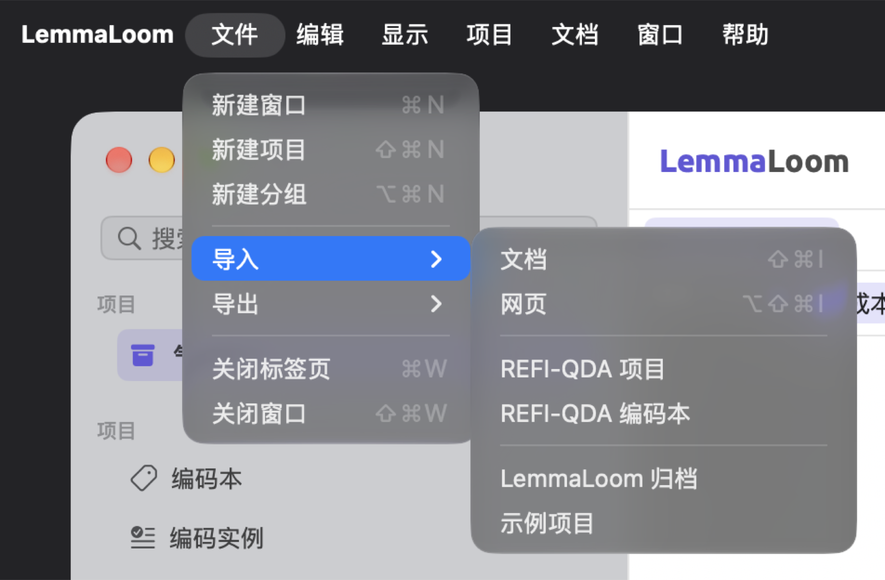
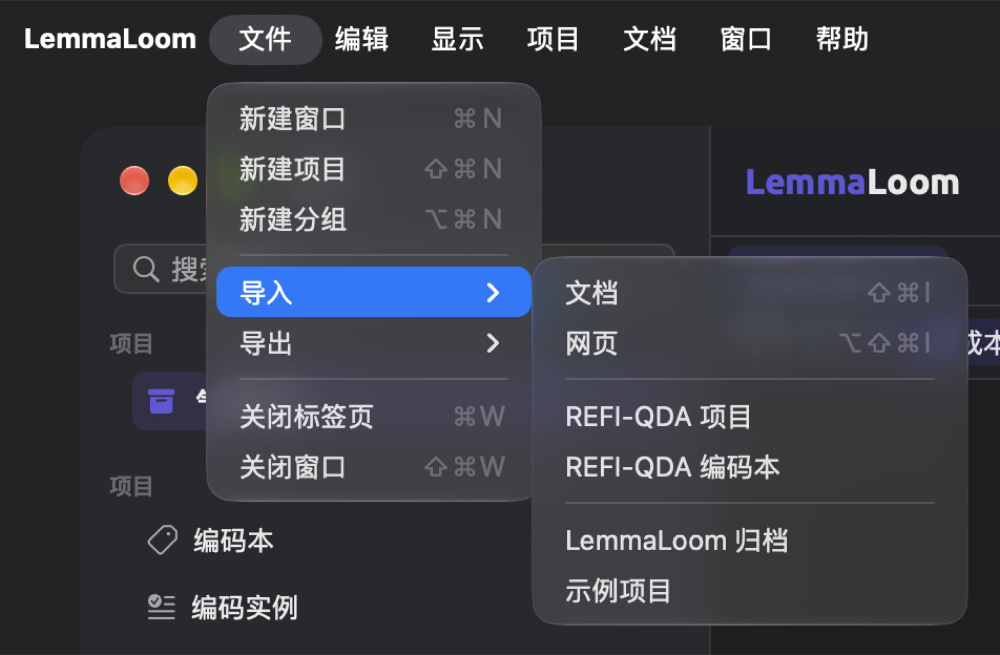
编辑
| 命令 | 快捷键 | 适用场合 |
|---|---|---|
| 编辑 ▸ 撤销 | ⌘Z | 任何有步骤可撤销的窗口。命令名称会写明是哪一步，例如撤销应用编码。 |
| 编辑 ▸ 重做 | ⇧⌘Z | 撤销之后，直到你做出新的更改为止 |
| 编辑 ▸ 剪切、拷贝、粘贴 | ⌘X、⌘C、⌘V | 文本框。拷贝也可以拷贝阅读器中选中的文本。 |
| 编辑 ▸ 全选 | ⌘A | 文本框，以及在文档文本中点按过之后的阅读器。在阅读器中，它会选中整个文档，并显示选区栏。 |
| 编辑 ▸ 移到类别 | 无 | 在词典视图中选中了某个类别中的词条时。把这些词条移到你选择的类别中。见第 19 章“词典”中的添加和移除词条。 |
| 编辑 ▸ 删除分析器 | ⌘⌫ | 分析器窗口，选中了一个分析器时。焦点在列表上时快捷键才有效，点按某个分析器之后焦点就在列表上。见第 20 章“自定义分析器”中的删除分析器。 |
| 编辑 ▸ 查找 | ⌘F | 当前文档的文本已载入时，编辑文本期间除外。打开搜索栏。再按一次会关闭搜索栏并清除搜索。 |
| 编辑 ▸ 查找下一个 | ⌘G | 搜索栏中有匹配项时。到达最后一个匹配项之后，会回到第一个。 |
| 编辑 ▸ 查找上一个 | ⇧⌘G | 搜索栏中有匹配项时。从第一个匹配项再往前，会转到最后一个。 |
| 编辑 ▸ 查找文档 | ⇧⌘F | 主窗口，有当前项目时。把光标放到导航栏顶部的搜索文档栏中；如果导航栏处于隐藏状态，则先显示导航栏。见第 3 章“项目与文档”中的导航栏。 |
| 编辑 ▸ 从所选内容查询 | 无 | 阅读器中选中了词语时，编辑文本期间除外。见第 17 章“查询模式与发现”中的从所选内容查询。 |
| 编辑 ▸ 新建查询 | 无 | 凡是显示查询的地方。用一个空查询取代当前查询。 |
| 编辑 ▸ 运行查询 | ⌘R | 当前窗口显示查询时。如果查询有错误而无法运行（例如模式无效），则不可用。 |
每个窗口各有独立的撤销历史，⌘Z 只作用于当前窗口的历史。光标位于文本框中时，⌘Z 撤销的则是你在这个文本框中的输入。这两种操作的详细说明见第 23 章“撤销与重做”。
运行查询会立即运行当前窗口中显示的查询。窗口会在以下位置之一显示查询：
- 检查器多重模式标签页的查询分面中（标签页下方的那一排就是各个分面，见第 2 章“开始使用”中的检查器）；
- 文档集、标签或项目的查询视图中，主窗口和编码本窗口都是如此；
- 查询窗口中（选取窗口 ▸ 查询）。
文档中的查询在你每次修改之后都会自动运行。在文档集或项目中，如果文档合计约有 300,000 个词符（词和标点符号一起计算）或更多，而查询需要读取它们的文本，查询就会等你发出指令，并显示运行查询按钮。用 ⌘R 运行它最快（见第 15 章“构建查询”中的运行查询）。
新建查询沿用当前查询的单位，也就是它所查找的对象类型（见第 15 章“构建查询”中的选择要查找的内容）。这个命令会清除到目前为止所有尚未存储的更改。你可以用编辑 ▸ 撤销撤回这次清除。
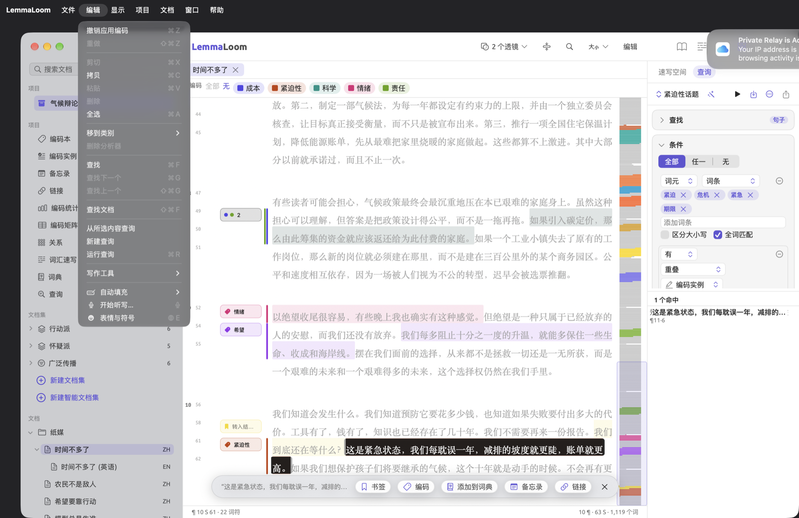
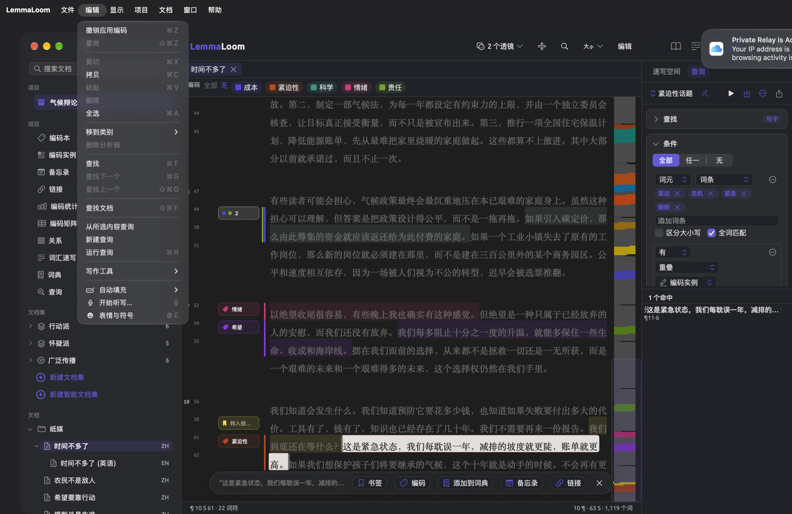
显示
| 命令 | 快捷键 | 适用场合 |
|---|---|---|
| 显示 ▸ 显示/隐藏导航栏 | ⌃⌘S | 主窗口 |
| 显示 ▸ 显示/隐藏检查器 | ⌃⌘I | 主窗口和文档的单独窗口。在主窗口中，当前标签页是文档集、标签或项目视图栏中的视图时，这个命令不可用。每个文档都会记住它的检查器是否显示。 |
| 显示 ▸ 检查器 ▸ 文本 | ⌥⌘1 | 有当前文档时，无论在主窗口中还是在文档自己的窗口中 |
| 显示 ▸ 检查器 ▸ 语法 | ⌥⌘2 | 同文本 |
| 显示 ▸ 检查器 ▸ 编码 | ⌥⌘3 | 同文本 |
| 显示 ▸ 检查器 ▸ 多重模式 | ⌥⌘4 | 同文本 |
| 显示 ▸ 增大文字 | ⌘+ | 有当前文档时，无论在主窗口中还是在文档自己的窗口中。最大 200%。 |
| 显示 ▸ 减小文字 | ⌘- | 同增大文字。最小 70%。 |
| 显示 ▸ 重置文字大小 | ⌘0 | 同增大文字，文字大小不是 100% 时 |
| 显示 ▸ 放大 | ⌘+ | 图示窗口。见第 11 章“语法检查器”中的图示窗口。 |
| 显示 ▸ 缩小 | ⌘- | 图示窗口 |
| 显示 ▸ 实际大小 | ⌘0 | 图示窗口，图示不是实际大小时 |
| 显示 ▸ 缩放以适应 | 无 | 图示窗口 |
| 显示 ▸ 同步滚动 | ⌥⌘L | 主窗口，在分屏浏览中显示同一文档的两种语言版本时。开启时命令旁显示勾号。见第 9 章“译文与分屏浏览”中的同步滚动。 |
| 显示 ▸ 词汇速写 ▸ 后退 | ⌘[ | 在词汇速写视图和窗口中，以及检查器的词汇速写中，历史记录里有更早的词时。见第 12 章“词汇速写”中的后退与前进。 |
| 显示 ▸ 词汇速写 ▸ 前进 | ⌘] | 同后退，在你后退之后 |
| 显示 ▸ 词汇速写 ▸ 聚焦词语输入框 | ⌘L | 在词汇速写视图和窗口中，以及检查器的词汇速写中。把光标放到词栏中。 |
| 显示 ▸ 词汇速写 ▸ 语法、编码和多重模式 | ⌘1、⌘2、⌘3 | 在词汇速写视图和窗口中，以及检查器的词汇速写中。切换到相应的模式，当前模式旁显示勾号。 |
| 显示 ▸ 进入全屏幕 | ⌃⌘F | 主窗口、查询窗口和结果窗口。菜单可能把按键显示为 fn F（地球仪键加 F），两种按法都有效。见第 5 章“阅读与编辑”中的全屏幕阅读器。 |
检查器没有显示时，⌥⌘1 到 ⌥⌘4 会先显示检查器，再切换到相应的标签页。如果当前标签页是文档集、标签或项目视图栏中的视图（例如编码本），检查器会自动关闭，显示/隐藏检查器以及 ⌥⌘1 到 ⌥⌘4 都会不可用。关于项目视图栏的更多信息，见第 2 章“开始使用”中的项目视图栏。
增大文字、减小文字和重置文字大小以 10% 为一级，更改所有文档的文字大小。它们与设置中的文字大小滑块调整的是同一项设置（见第 5 章“阅读与编辑”中的文字大小）；不过在图示窗口中，⌘+、⌘- 和 ⌘0 用来放大、缩小和还原图示。在美式键盘上，无论是增大文字还是放大，⌘+ 都相当于按 ⇧⌘=。
显示 ▸ 词汇速写下的命令作用于项目的词汇速写视图、文档集或标签的词汇速写视图、词汇速写窗口本身，以及检查器中的词汇速写。在检查器中，各个模式对应不同的速写。例如，选择语法模式时，你会看到检查器语法标签页中的词汇速写；选择编码会调出编码标签页中的编码速写；选择多重模式则显示多重模式标签页中的速写空间。三者用同一条历史记录保存你的词汇速写，所以切换时所查看的词保持不变。
菜单顶部的显示标签页栏和显示所有标签页直接来自 macOS，用于把窗口合并成标签页。
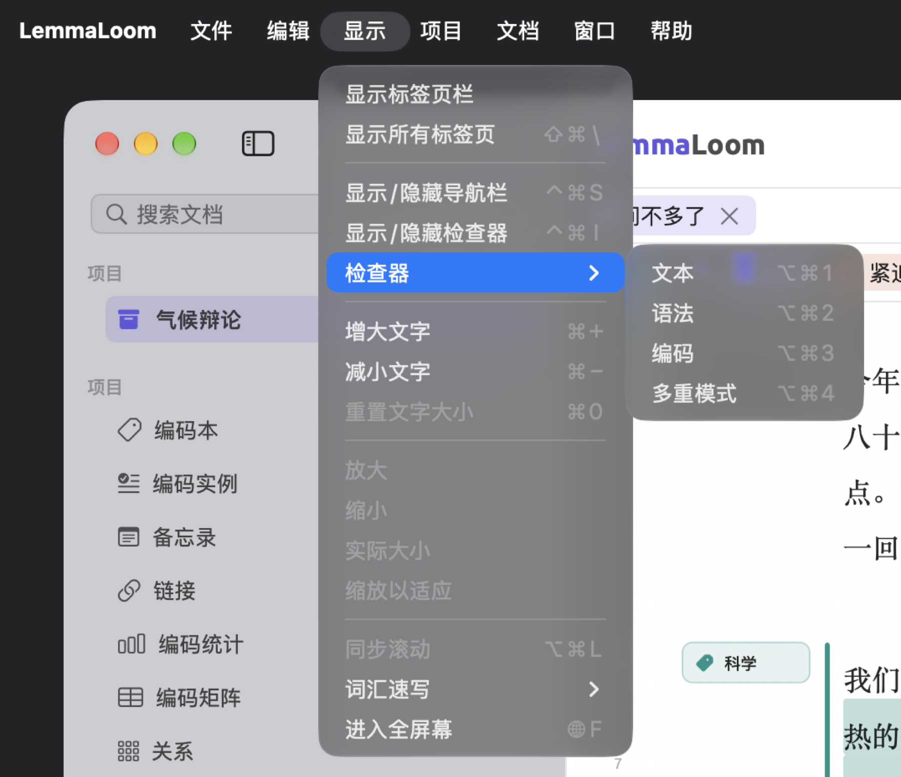
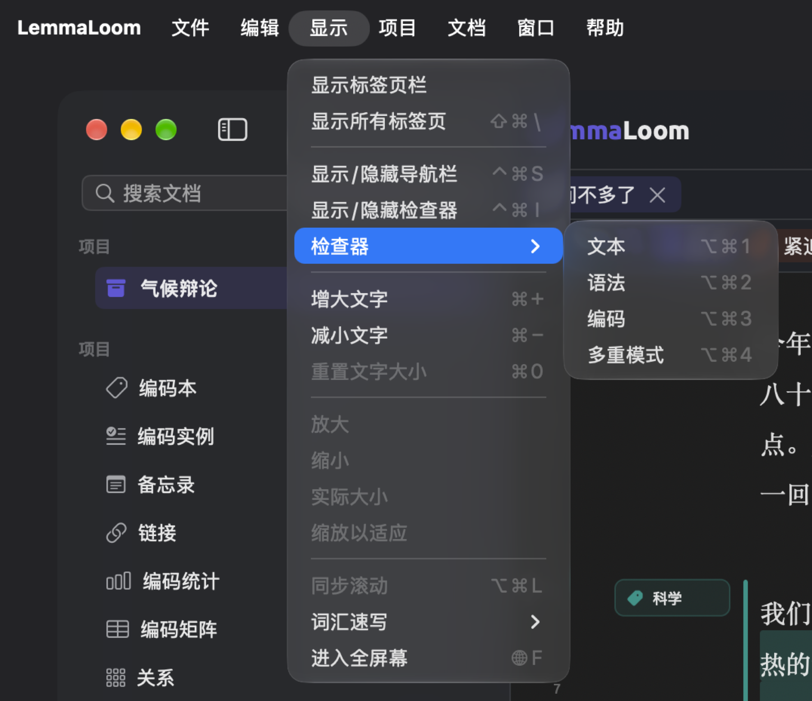
项目
这个菜单中的大多数命令作用于你在导航栏中选中的对象，因此要在主窗口中使用。不过，与编码有关的命令作用于任何窗口中编码本视图或编码分面里选中的编码。详细说明见第 3 章“项目与文档”、第 8 章“文档集、分组、标签和属性”以及第 7 章“编码”中的整理编码。
| 命令 | 快捷键 | 适用场合 |
|---|---|---|
| 项目 ▸ 新建文档集和新建智能文档集 | 无 | 主窗口，有当前项目时 |
| 项目 ▸ 编辑智能文档集 | 无 | 主窗口，在导航栏中选中了智能文档集，或者智能文档集在当前标签页中打开时 |
| 项目 ▸ 添加编码 | 无 | 主窗口，有当前项目时 |
| 项目 ▸ 添加子编码、移到、合并到、添加到编码集和删除编码 | 无 | 在编码本视图或编码分面中选中了一个编码时 |
| 项目 ▸ 重命名和信息 | 无 | 主窗口，在导航栏中选中了一个文档时 |
| 项目 ▸ 移到分组和添加到文档集 | 无 | 主窗口，在导航栏中选中了文档时 |
| 项目 ▸ 从文档集中移除 | 无 | 主窗口，在导航栏中选中了同一个文档集下的一个或多个文档时，前提是它不是智能文档集 |
| 项目 ▸ 翻译 | 无 | 主窗口，在导航栏中选中了原文，或者原文是阅读器中的当前文档时 |
| 项目 ▸ 删除项目、删除文档集、删除分组或删除文档 | ⌘⌫ | 主窗口，在导航栏中点按了项目、文档集或分组之后，或者在文档下选中了文档之后。命令以它要删除的对象命名。 |
| 项目 ▸ 属性 | 无 | 主窗口，有当前项目时。打开属性窗口。 |
| 项目 ▸ 打开 | 无 | 主窗口，有当前项目时。列出项目视图栏的十个视图，并在标签页中打开你选择的那一个。 |
删除文档和项目之前需要你确认。文档集和分组则会立即删除，可以用编辑 ▸ 撤销（⌘Z）恢复。
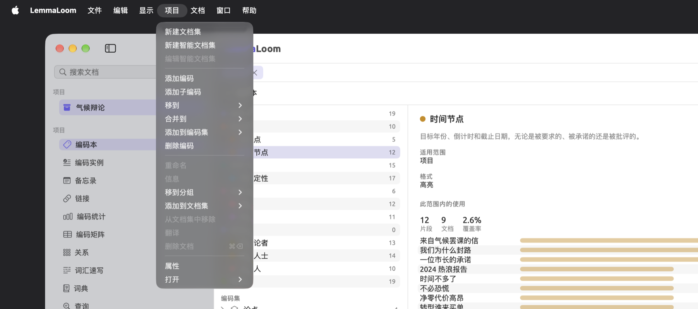
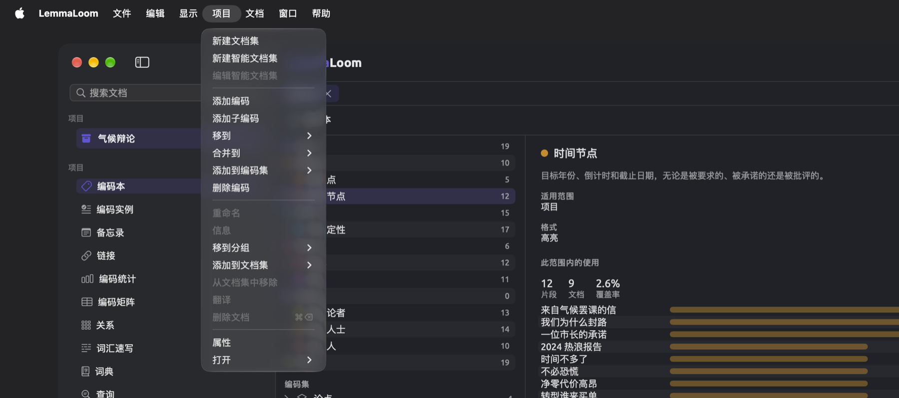
文档
这些命令作用于当前窗格中的文档，或者在自己的窗口中打开的文档。
| 命令 | 快捷键 | 适用场合 |
|---|---|---|
| 文档 ▸ 编辑 | ⇧⌘E | 文档的文本载入之后。把阅读器变成文本编辑器。 |
| 文档 ▸ 存储 | ⌘Return | 编辑时。存储文本，LemmaLoom 随后为它重新建立索引。 |
| 文档 ▸ 取消 | ⌘. | 编辑时。丢弃自你选取编辑以来输入的所有内容。 |
| 文档 ▸ 编码 | ⇧⌘C | 选中了一个词或一段文字时，编辑文本期间除外。打开编码面板，也就是可应用于选区的编码列表。 |
| 文档 ▸ 实境编码 | ⇧⌘V | 同编码。用一个以所选词语命名的编码为选区编码；如果还没有这个名称的编码，则新建一个。见第 7 章“编码”中的为一段文字编码。 |
| 文档 ▸ 自动编码… | ⇧⌘A | 在透镜菜单中启用了词典透镜、查询透镜或分析器透镜时（见第 6 章“透镜”）。启用了其中不止一个时，菜单为每个透镜各提供一个以透镜命名的命令，例如使用模糊限制语自动编码…，⇧⌘A 对应第一个。见第 7 章“编码”中的自动为段落编码。 |
| 文档 ▸ 备忘录 | ⇧⌘M | 同编码。为选区打开新建备忘录对话框。 |
| 文档 ▸ 书签 | ⇧⌘B | 同编码。打开新建书签对话框。如果选区与某个书签重叠，命令变为移除书签，并立即移除这个书签；按 ⌘Z 可以恢复它。 |
| 文档 ▸ 链接 | ⇧⌘L | 同编码。从选区开始建立链接，命令随后变为完成链接。选中另一段文字（在本文档或其他文档中），再按一次 ⇧⌘L，即可打开新建链接对话框。 |
| 文档 ▸ 取消链接 | ⌥⇧⌘L | 建立链接的过程中，无论有没有选区。放弃你已经开始的链接。 |
| 文档 ▸ 播放 | ⇧⌘P | 音频和视频文档。录音播放时，命令变为暂停。 |
LemmaLoom 存储你的更改期间，编辑、存储和取消命令不可用。
应用编码、创建备忘录、添加书签和建立链接的详细说明见第 7 章“编码”。编辑文本和播放录音的说明见第 5 章“阅读与编辑”。
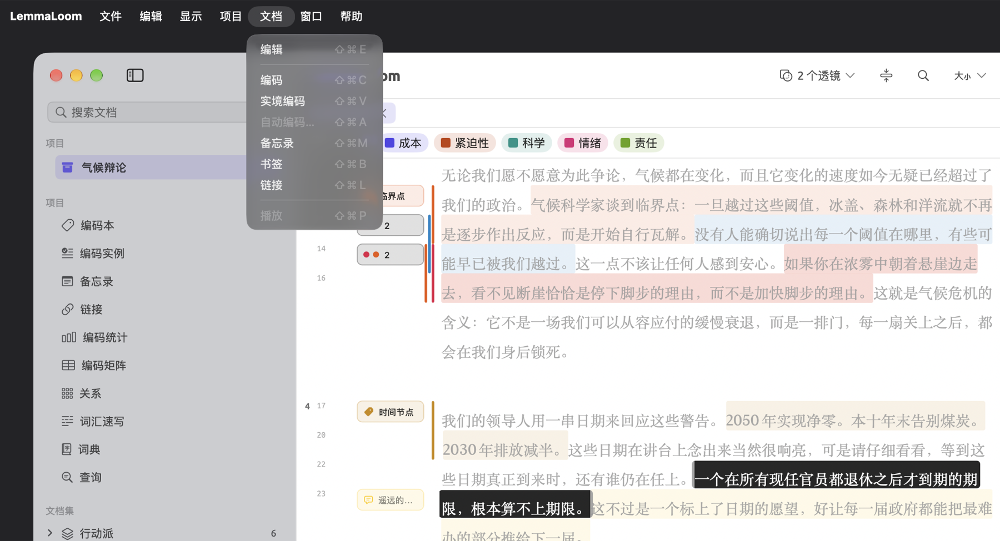
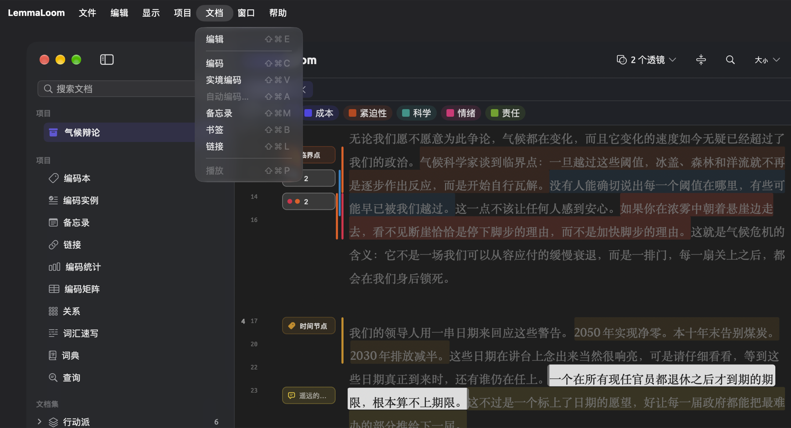
窗口
| 命令 | 快捷键 | 适用场合 |
|---|---|---|
| 窗口 ▸ 最小化 | ⌘M | 当前窗口 |
| 窗口 ▸ 显示上一个标签页 | ⇧⌘[ | 主窗口，至少打开了两个标签页时。从第一个标签页再往前，会转到最后一个。 |
| 窗口 ▸ 显示下一个标签页 | ⇧⌘] | 主窗口，至少打开了两个标签页时。到达最后一个标签页之后，会回到第一个。 |
| 窗口 ▸ 在新窗口中打开 | 无 | 主窗口。在单独的窗口中打开当前窗格中的文档，或者当前标签页中的视图。在文档集或标签的标签页中，只有词汇速写和查询视图可以在单独的窗口中打开。见第 5 章“阅读与编辑”中的在单独的窗口中打开文档。 |
| 窗口 ▸ 在分屏浏览中打开 | 无 | 主窗口，有当前文档时。列出可以放在它旁边的已打开文档。见第 9 章“译文与分屏浏览”中的并排打开两个文档。 |
| 窗口 ▸ 在原文旁边打开 | 无 | 主窗口，在导航栏中选中了译文，或者译文是阅读器中的当前文档时 |
| 窗口 ▸ 并排打开 | 无 | 主窗口，在导航栏中选中了两个文档时 |
| 窗口 ▸ 关闭分屏浏览 | 无 | 主窗口，在分屏浏览中 |
| 窗口 ▸ 活动 | ⌥⌘0 | 任何窗口。打开活动窗口；如果它已经打开，则切换到它。见第 4 章“导入资料”中的活动窗口。 |
| 窗口 ▸ 分析器 | 无 | 任何窗口。见第 20 章“自定义分析器”。 |
| 窗口 ▸ 编码本 | 无 | 任何窗口，有当前项目时。见第 7 章“编码”中的“编码本”视图。 |
| 窗口 ▸ 标签 | 无 | 任何窗口。见第 3 章“项目与文档”中的标签窗口。 |
| 窗口 ▸ 查询 | 无 | 任何窗口。见第 15 章“构建查询”中的查询窗口。 |
这里的标签页指阅读器上方的标签页，即打开的文档、文档集、标签和项目视图栏中的视图。如果你正在使用分屏浏览，切换到任何一个标签页都会使左侧窗格成为当前窗格。
在菜单靠下的位置，macOS 另外提供了两个同样名为显示上一个标签页和显示下一个标签页的选项，它们用于在合并的窗口之间切换。要切换阅读器上方的标签页，则需要使用 ⇧⌘[ 和 ⇧⌘]。菜单最底部列出 LemmaLoom 已打开的窗口。
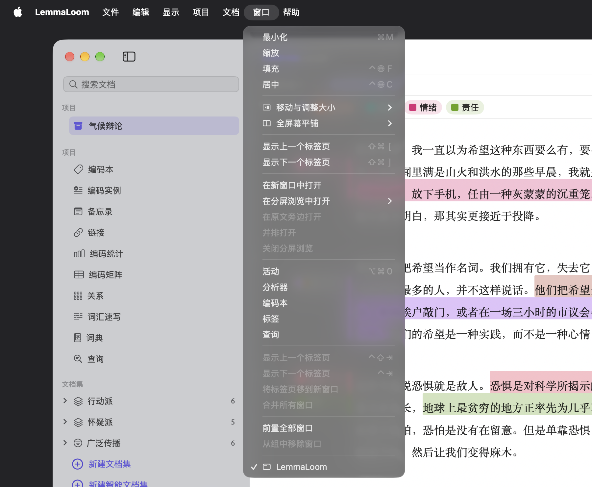
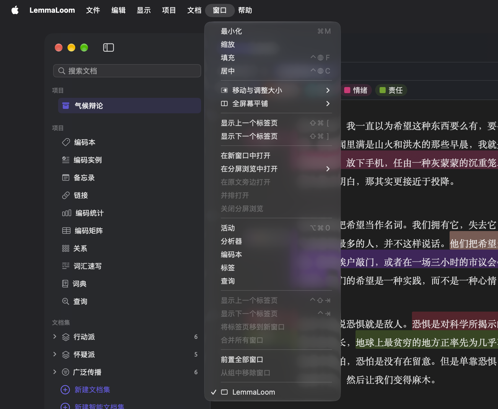
帮助
| 命令 | 快捷键 | 适用场合 |
|---|---|---|
| 帮助 ▸ 术语表 | 无 | 任何窗口。见第 26 章“帮助与支持”中的术语表。 |
| 帮助 ▸ 发送反馈 | 无 | 任何窗口。见第 26 章“帮助与支持”中的发送反馈。 |
带快捷键的按钮
许多按钮的作用与某个菜单命令相同，快捷键也相同。这些按钮大多位于阅读区顶部的标题栏中，或者标题栏下方的搜索栏中。有些按钮会在你选择文本之后出现在选区栏中，还有一些位于音频或视频文档的播放栏中。第 5 章“阅读与编辑”详细介绍了每一个按钮。
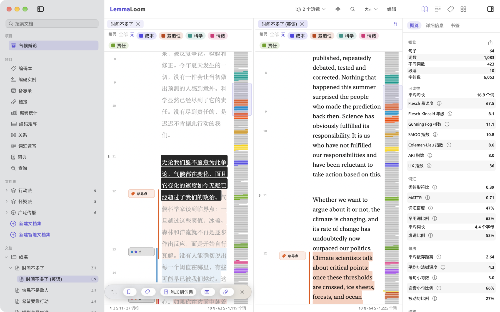
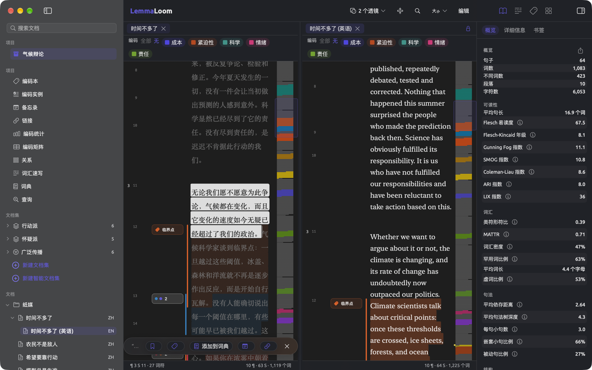
| 按钮 | 位置 | 等同于 | 快捷键 |
|---|---|---|---|
| 显示/隐藏导航栏 | 窗口工具栏的左端 | 显示 ▸ 显示/隐藏导航栏 | ⌃⌘S |
| 显示/隐藏检查器 | 窗口工具栏的右端 | 显示 ▸ 显示/隐藏检查器 | ⌃⌘I |
| 标签页上的 ×（关闭标签页） | 标签页所在的那一排 | 文件 ▸ 关闭标签页，作用于当前标签页 | ⌘W |
| 右侧窗格标签页上的 ×（关闭分屏浏览） | 分屏浏览中右侧窗格的顶部 | 文件 ▸ 关闭标签页，右侧窗格为当前窗格时 | ⌘W |
| 锁形按钮（同步滚动） | 并排显示两种语言版本时，右侧窗格的顶部 | 显示 ▸ 同步滚动 | ⌥⌘L |
| 在文档中查找（放大镜） | 标题栏 | 编辑 ▸ 查找 | ⌘F |
| 增大文字、减小文字、重置文字大小 | 标题栏中的字体、边栏与文字大小菜单 | 显示菜单中的同名命令 | ⌘+、⌘-、⌘0 |
| 编辑 | 标题栏 | 文档 ▸ 编辑 | ⇧⌘E |
| 存储和取消 | 标题栏，编辑时 | 文档 ▸ 存储和文档 ▸ 取消 | ⌘Return 和 ⌘. |
| 下一个匹配项和上一个匹配项（向下和向上的箭头） | 搜索栏 | 编辑 ▸ 查找下一个和编辑 ▸ 查找上一个 | ⌘G 和 ⇧⌘G |
| 关闭搜索栏（×） | 搜索栏 | 搜索栏打开时的编辑 ▸ 查找 | ⌘F 或 Esc |
| 书签或移除书签 | 选区栏 | 文档 ▸ 书签 | ⇧⌘B |
| 编码 | 选区栏 | 文档 ▸ 编码 | ⇧⌘C |
| 实境编码“…” | 编码面板的最后一项 | 文档 ▸ 实境编码 | ⇧⌘V |
| 备忘录 | 选区栏 | 文档 ▸ 备忘录 | ⇧⌘M |
| 链接或完成链接 | 选区栏 | 文档 ▸ 链接 | ⇧⌘L |
| 取消待定链接（带斜线的链接图标） | 选区栏，建立链接的过程中 | 文档 ▸ 取消链接 | ⌥⇧⌘L |
| 清除所选（×） | 选区栏 | 没有对应的菜单命令 | Esc |
| 播放或暂停 | 播放栏 | 文档 ▸ 播放 | ⇧⌘P |
| 运行查询（三角形） | 查询上方的栏 | 编辑 ▸ 运行查询 | ⌘R |
| 后退和前进（箭头） | 词汇速写上方的栏 | 显示 ▸ 词汇速写 ▸ 后退和前进 | ⌘[ 和 ⌘] |
| 语法、编码和多重模式 | 词汇速写视图和窗口中的模式控件 | 显示 ▸ 词汇速写下的同名命令 | ⌘1、⌘2、⌘3 |
| 放大和缩小（放大镜） | 图示窗口的缩放栏 | 显示 ▸ 放大和显示 ▸ 缩小 | ⌘+ 和 ⌘- |
在全屏幕模式下，标题栏中的工具会移到窗口的工具栏中（见第 5 章“阅读与编辑”中的全屏幕阅读器）。它们的快捷键同样有效，文字菜单在那里名为阅读器设置。
Esc 键、Return 键和方向键
Esc 键、Return 键和方向键在菜单之外起作用，具体作用取决于你所在的位置。
Esc 键用来关闭或清除你正在操作的内容：
- 在阅读器中，Esc 键清除选区，但不影响待定的链接。如果你改变主意，不想建立链接了，可以选取文档 ▸ 取消链接（⌥⇧⌘L）。
- 在搜索栏中，Esc 键关闭搜索栏，并清除当前的搜索。
- 在编码面板中按 Esc 键会关闭面板，选区仍然保留。
- 在搜索文档栏和导航栏中，Esc 键都会清除搜索结果，并显示所有文档。
- 在带有取消按钮的对话框中，Esc 键相当于点按这个按钮。
- 最后，如果你在重命名项目、文档、文档集、分组或标签时按下 Esc 键，原来的名称会保留下来。
在分屏浏览中，在阅读器里按 Esc 键只影响当前窗格。
Return 键用来确认输入、应用选择，或者打开你选中的对象：
- 在搜索栏中按 Return 键，会转到搜索内容的下一个匹配项（与 ⌘G 相同）；而在搜索文档栏中按 Return 键，会打开找到的第一个文档。
- 在导航栏中，点按文档或在文档上按 Return 键，也可以打开文档。
- 在其他列表中，例如编码本、编码实例、备忘录和链接视图或标签窗口，点按会选中一项，连按两次或按 Return 键则会打开它。
- 在编码面板中，Return 键应用高亮显示的项（在搜索编码中输入文字之后，高亮会移到剩下的第一项）。如果选区已经带有高亮显示的编码，Return 键会将它移除。
- 在对话框中，如果光标不在任何输入栏中，或者位于本身不处理 Return 键的单行输入栏中，按 Return 键相当于点按高亮显示的按钮，例如存储或自动编码；下面几项中的输入栏即使位于对话框中，也会自己处理 Return 键。
- 重命名时（包括在词典视图中重命名词典），按 Return 键或点按别处都会确认你输入的更改。
- 在添加标签栏中，Return 键和英文逗号都用来分隔标签。
- 在查询文本规则和词典类别的添加词条栏中，按 Return 键会添加词条。在查询中，这些输入栏可以接受用英文逗号分隔的多个词条。
- 在属性名称栏中输入新属性的名称之后，按 Return 键即可添加这个属性。
- 在导入文档或文档信息对话框中，按 Return 键会把输入的模式添加到从索引中排除下。
- 在词汇速写、编码速写和速写空间的词栏中，按 Return 键会显示所输入词语的速写。
- 最后，在分析器窗口中，在名称栏或某个标签栏中输入时，按 Return 键相当于点按存储。
↑ 和 ↓ 键用来在导航栏和编码面板中移动：
- 在导航栏中，↑ 和 ↓ 键在各行之间移动，之后按 Return 键即可打开新选中的文档。
- 在搜索文档栏中按 ↓ 键，会选中结果中的第一个文档，并进入列表。
- 在编码面板中，↑ 和 ↓ 键依次高亮显示面板中的各项，包括末尾的添加编码“…”和实境编码“…”。
在词典视图中某个类别的表格里，按 Delete 键（⌫）会移除选中的词条。
按住修饰键点按
有几个操作需要把按键与鼠标或触控板配合使用。
| 按键 | 位置 | 作用 |
|---|---|---|
| 按住 ⌘ 点按 | 导航栏文档部分中的文档 | 把这个文档加入所选文档，或者再把它移出 |
| 按住 ⇧ 点按 | 导航栏文档部分中的文档 | 选中从这个文档到你上一次点按的文档之间的所有文档 |
| 按住 ⌘ 滚动 | 词汇速写、编码速写或速写空间中的速写图谱 | 以鼠标指针为中心放大或缩小。直接滚动则会移动放大后的图谱。 |
选中多个文档之后，右键点按其中任何一个，即可使用作用于所有选中文档的操作（见第 3 章“项目与文档”中的选择多个文档）。缩放功能的详细说明见第 12 章“词汇速写”中的图谱。
按按键排列的全部快捷键
下表列出 LemmaLoom 菜单中的所有快捷键，先按修饰键、再按按键排列。如果你想弄清自己不小心触发了哪个命令，或者想知道打算指定的按键是否已被占用，这张表会派上用场。
| 按键 | 命令 |
|---|---|
| ⌘, | LemmaLoom ▸ 设置… |
| ⌘. | 文档 ▸ 取消 |
| ⌘+ | 显示 ▸ 增大文字；在图示窗口中是显示 ▸ 放大 |
| ⌘- | 显示 ▸ 减小文字；在图示窗口中是显示 ▸ 缩小 |
| ⌘[ | 显示 ▸ 词汇速写 ▸ 后退 |
| ⌘] | 显示 ▸ 词汇速写 ▸ 前进 |
| ⌘0 | 显示 ▸ 重置文字大小；在图示窗口中是显示 ▸ 实际大小 |
| ⌘1 到 ⌘3 | 显示 ▸ 词汇速写 ▸ 语法、编码和多重模式 |
| ⌘A | 编辑 ▸ 全选 |
| ⌘C | 编辑 ▸ 拷贝 |
| ⌘F | 编辑 ▸ 查找 |
| ⌘G | 编辑 ▸ 查找下一个 |
| ⌘H | LemmaLoom ▸ 隐藏LemmaLoom |
| ⌘L | 显示 ▸ 词汇速写 ▸ 聚焦词语输入框 |
| ⌘M | 窗口 ▸ 最小化 |
| ⌘N | 文件 ▸ 新建窗口 |
| ⌘Q | LemmaLoom ▸ 退出LemmaLoom |
| ⌘R | 编辑 ▸ 运行查询 |
| ⌘V | 编辑 ▸ 粘贴 |
| ⌘W | 文件 ▸ 关闭标签页或文件 ▸ 关闭 |
| ⌘X | 编辑 ▸ 剪切 |
| ⌘Z | 编辑 ▸ 撤销 |
| ⌘Return | 文档 ▸ 存储 |
| ⌘⌫ | 项目 ▸ 删除项目、删除文档集、删除分组或删除文档；在分析器窗口中是编辑 ▸ 删除分析器 |
| ⇧⌘/ | 帮助菜单的搜索栏 |
| ⇧⌘[ | 窗口 ▸ 显示上一个标签页 |
| ⇧⌘\ | 显示 ▸ 显示所有标签页 |
| ⇧⌘] | 窗口 ▸ 显示下一个标签页 |
| ⇧⌘A | 文档 ▸ 自动编码… |
| ⇧⌘B | 文档 ▸ 书签或移除书签 |
| ⇧⌘C | 文档 ▸ 编码 |
| ⇧⌘E | 文档 ▸ 编辑 |
| ⇧⌘F | 编辑 ▸ 查找文档 |
| ⇧⌘G | 编辑 ▸ 查找上一个 |
| ⇧⌘I | 文件 ▸ 导入 ▸ 文档 |
| ⇧⌘L | 文档 ▸ 链接或完成链接 |
| ⇧⌘M | 文档 ▸ 备忘录 |
| ⇧⌘N | 文件 ▸ 新建项目 |
| ⇧⌘P | 文档 ▸ 播放或暂停 |
| ⇧⌘V | 文档 ▸ 实境编码 |
| ⇧⌘W | 文件 ▸ 关闭窗口 |
| ⇧⌘Z | 编辑 ▸ 重做 |
| ⌥⌘0 | 窗口 ▸ 活动 |
| ⌥⌘1 到 ⌥⌘4 | 显示 ▸ 检查器 ▸ 文本、语法、编码和多重模式 |
| ⌥⌘H | LemmaLoom ▸ 隐藏其他 |
| ⌥⌘L | 显示 ▸ 同步滚动 |
| ⌥⌘N | 文件 ▸ 新建分组 |
| ⌥⇧⌘I | 文件 ▸ 导入 ▸ 网页 |
| ⌥⇧⌘L | 文档 ▸ 取消链接 |
| ⌃⌘F | 显示 ▸ 进入全屏幕或退出全屏幕 |
| ⌃⌘I | 显示 ▸ 显示/隐藏检查器 |
| ⌃⌘S | 显示 ▸ 显示/隐藏导航栏 |
| ⌃Tab | 窗口 ▸ 显示下一个标签页（合并的窗口） |
| ⌃⇧Tab | 窗口 ▸ 显示上一个标签页（合并的窗口） |
| fn E | 编辑 ▸ 表情与符号 |
| ⌃fn C | 窗口 ▸ 居中 |
| ⌃fn F | 窗口 ▸ 填充 |
用键盘编码
选择一段文字需要用鼠标或触控板，但前后的几乎所有操作都可以用键盘完成。假设你正在“气候辩论”中查找谈到期限的段落，“时间不多了”和“来自气候罢课的信”已在标签页中打开，当前标签页是“时间不多了”。如果想跟着操作，可以用文件 ▸ 导入 ▸ 示例项目导入示例项目。
- 按下 ⌥⌘3。检查器显示编码标签页。
- 按下 ⌘F，输入
退休。阅读器转到唯一的匹配项，它位于讲领导人所承诺日期的那一段中。 - 按下 Esc 键，关闭搜索栏。
- 选中句子一个在所有现任官员都退休之后才到期的期限，根本算不上期限。
- 按下 ⇧⌘C。编码面板打开，光标位于搜索编码中。
- 输入
时间。列表中只剩下“时间节点”这一个编码。 - 按下 Return 键。“时间节点”带上勾号，面板保持打开。
- 按下 Esc 键，关闭面板。这段文字仍处于选中状态。
- 按下 ⇧⌘M。新建备忘录对话框打开。
- 点按备忘录栏，输入一条笔记，例如
这些目标都定在提出者退休之后；可对照“来自气候罢课的信”。 - 点按存储。
- 按下 ⇧⌘]，转到“来自气候罢课的信”。
如果把编码应用到了错误的段落，关闭面板后按 ⌘Z 即可。编辑 ▸ 撤销应用编码会撤回这个编码实例。面板仍然打开时，再按一次 Return 键会移除“时间节点”。
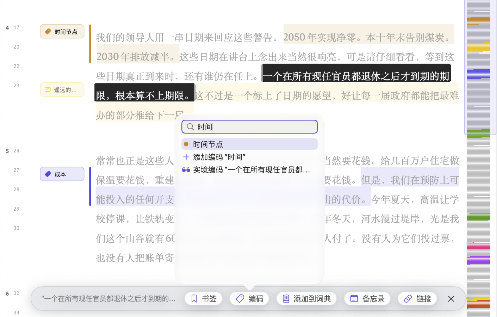
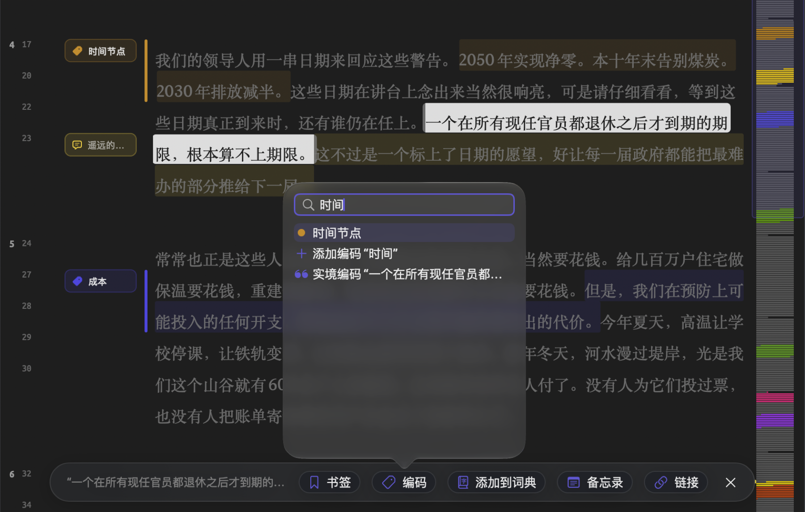
添加自定义键盘快捷键
在 macOS 中，可以为任何应用程序中的任何菜单命令指定快捷键。这样，你就能快速执行经常使用的命令，例如编辑 ▸ 从所选内容查询和项目 ▸ 添加编码。你也可以按自己的习惯重新指定已有的快捷键。
- 打开系统设置，点按键盘。
- 点按键盘快捷键…。
- 点按左侧列表中的 App快捷键。
- 点按添加按钮（+）。
- 选择 LemmaLoom 作为应用程序。
- 在菜单标题中，按菜单上显示的样子原样输入命令名称，例如
从所选内容查询。 - 点按快捷键栏，按下尚未被占用的按键（见本章前文的按按键排列的全部快捷键），例如 ⌃⌥⌘Q。
- 点按完成。
为名称中带省略号的命令（例如自动编码…）指定按键时，省略号要作为单个字符输入。在美式键盘上，这意味着同时按 Option 键和分号键，而不是输入三个句点或中文输入法中的“……”。有些命令在应用程序的菜单中出现两次（例如导入和导出下都有 REFI-QDA 项目）。遇到这种情况，需要输入命令的完整路径，各级菜单之间用 -> 分隔，例如 文件->导出->REFI-QDA 项目。
存储之后，快捷键会显示在 LemmaLoom 的菜单中这个命令的旁边。如果没有显示，请退出 LemmaLoom 并重新打开。
macOS 根据菜单项的名称识别命令。因此，你输入的名称应当与应用程序当前所用语言中的菜单项名称一致。更改语言之后，需要按新的命令名称重新设置快捷键，例如英文界面中的 Query from Selection。出于同样的原因，会改名的命令只有在显示为你所输入的名称时，才会响应你的快捷键。同时启用了多个可以自动编码的透镜时，为自动编码…指定的按键会失效，因为这时菜单提供的是使用模糊限制语自动编码…之类的命令。